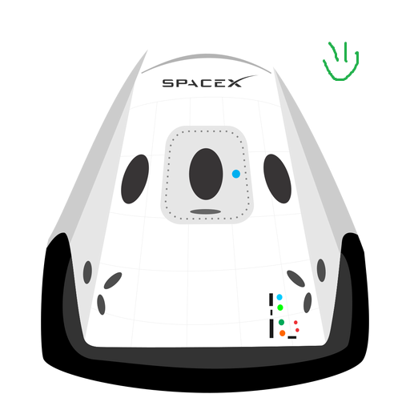

Hyperblog
Tu blog de confianza
Éste es el título atractivo e interesante del post
Y éste es el párrafo de inicio donde vamos a explicar las cosas increíbles que se pueden hacer con ramas

Los blogs son la mejor forma de compartir información y tus ideas. Mucho más que ir a conferencias o salir en Youtube. Excepto si eres un rockstar. Pero estadísticamente no lo eres.... por ahora.
Éste es un mensaje nuevo, NO está dentro de los vídeos del curso, servirá para labrar una línea de tiempo alterna!!
Suscríbete y dale like!